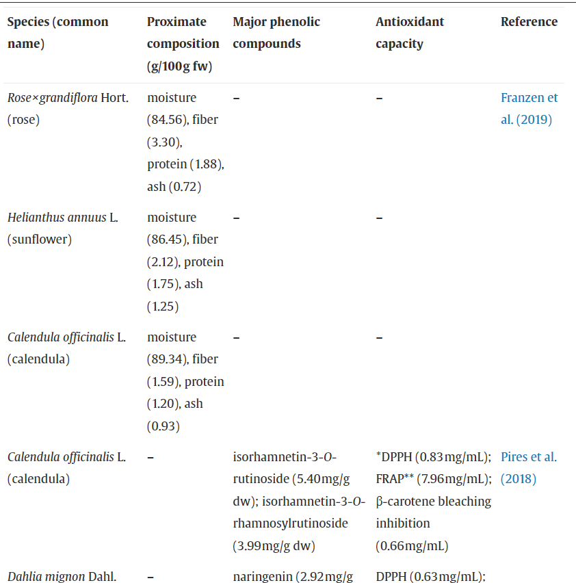
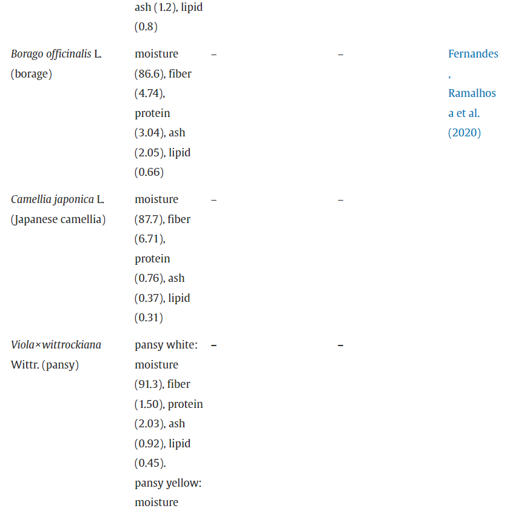

Wild flowers (WF)
Besides their ornamental use, some flowers are recognized as edible and part of non-conventional foods. Edible flowers should be more exploited due to their nutritional and sensory contribution to foodstuff. The encouragement and expansion of the use of edible flowers by the food industry can contribute to this sector’s economy and promote the sustainable use of natural resources in the cultivation of these flowers, changing the relationship of people with the land, with food and rescuing them as food options, considering they have been used for culinary purposes since ancient times (Guiné et al., 2020, Rodrigues et al., 2017). Furthermore, edible flowers may also help maintain biodiversity, acting as pollen sources visited by bees and other social insects. In France and Italy, calendula (Calendula officinalis L.) and rose (Rosa spp. L.) flowers were already used as ingredients in salads, purees, and omelets in the medieval age (Chitrakar, Zhang, & Bhandari, 2019). In recent decades, there has been an increase in research focusing on the potential of edible flowers as food ingredients and sources of bioactive compounds (Pires et al., 2018). Sensory properties, potential health benefits, and curiosity directly influence the attitude towards the consumption of edible flowers, which is also influenced by the consumers’ nationality (Matyjaszczyk & Śmiechowska, 2019). Flowers can transform simple dishes into exotic and high-cost foods (Barros et al., 2020). The most frequent form of flower consumption is in natura. A range of species has been used to garnish salty or sweet dishes, as well as fillings or ingredients in a variety of foods, especially bakery products (Fig. 2). In addition, it provides an exotic aroma, delicate flavor, and vibrant colors; the flowers add freshness to foods and can contribute to human health with their bioactive compounds (Fernandes, Ramalhosa, Pereira, Saraiva, & Casal, 2020).
Examples of the use of edible flowers reported in gourmet culinary. Registered by the authors or Francis Córdula.
Each species of flower has a distinct nutritional composition, being water the predominant component. The composition of edible flowers also includes phenolic compounds, carotenoids, vitamins, and minerals such as calcium, copper, iron, potassium, and magnesium (Nowicka & Wojdyło, 2019). The bioactive compounds found in flowers include phenolic compounds, well known for their antioxidant properties, having received more attention from the scientific community. Table 2 presents the chemical and phenolic compositions, and the antioxidant capacity of the most consumed edible flowers.
Chemical composition, major phenolic compounds, and antioxidant capacity of edible flowers species widely used in culinary.
 